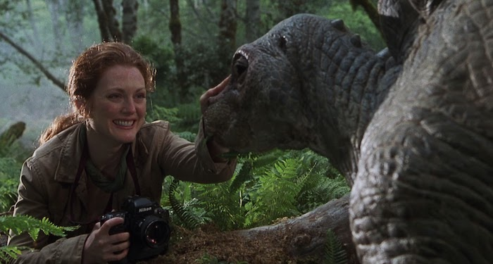

The Lost World: Jurassic Park
Plot Synopsis
The movie opens with an incident on the island of Isla Sorna (code-named "Site B" by the InGen company), located in the vicinity of Isla Nublar, where the film "Jurassic Park" took place.
A British couple has stopped along the coast to relax, and their daughter has gone off on her own. She soon encounters a group of Compsognathus or "Compies," that attack her, much to the shock of her family when they find her after hearing her scream loudly.
The film then cuts to Ian Malcolm, who is called to the Mansion of John Hammond, the "former" head of InGen. Malcolm meets Hammond's grandchildren Lex and Tim there, whom he encountered on Isla Nublar in the first film. Malcolm also meets Hammond's nephew, Peter Ludlow, who has taken over InGen as its new Chief Executive Officer. Both trade barbs over the aftermath of the incidents at Jurassic Park, with Malcolm chastising Ludlow for covering up what really happened, and Ludlow claiming Malcolm went public telling stories (of which Malcolm counters he told the truth but took no payment for what he revealed).
Malcolm then is allowed to visit Hammond, who is now bed-ridden. Malcolm is soon shocked when Hammond tells him about Site B. Isla Nublar was the location for Jurassic Park, but Site B was where the animals were originally created and bred. However, in the aftermath of Hurricane Clarissa, Site B was evacuated and the animals let loose to roam free, with them inhabiting an environment free of human interference. This shocks Malcolm as he had assumed that the dinosaurs should have died, since they were bred with a lysine deficiency, that needed to be supplied by medical means. Hammond explains he has no idea why they are still alive, and shocks Malcolm when he explains that a research team has been recruited to conduct studies on this subject, and that brings him to Malcolm, who Hammond wants to be the 4th member of the team.
Hammond then explains that after the incidents at Jurassic Park, InGen has been on the verge of Chapter 11 bankruptcy for some time, with the Board wanting to exploit the remaining dinosaurs on Site B for profit purposes. Hammond was able to keep them from doing so until the incident with the British Family. After this, control of InGen was taken away from Hammond, and he explains that his plans for the research team are seen as a possible deterrent for whatever his nephew Peter has planned.
Malcolm (of course) refuses Hammond's offer, and plans to make sure that the research team does not set foot on the island. However, he soon finds that his former girlfriend Sarah Harding (Julianne Moore) has already arrived, with the additional members to meet her in 3 days. Malcolm then leaves planning to rescue Sarah from Site B.
Malcolm's next stop is a garage owned by Eddie Carr (Richard Schiff), who has been prepping vehicles and equipment for the expedition. Malcolm also meets Nick Van Owen (Vince Vaughan), who was planning to take video and photographic footage for Hammond's expedition. Malcolm is soon after joined by his daughter Kelly (Vanessa Lee Chester). Kelly wants to come along on the expedition, but Malcolm explains she can't go, and the two have a small altercation before Malcolm sends her on her way, telling her 'not to listen to him.'
Malcolm, Eddie and Nick transport two Mercedes SUV's and a modified RV to Costa Rica, and then head to Site B. However, the ferryman refuses to weight anchor near the islands, claiming that some people wandered too close to the island chain and were never heard from again. Through translation, Nick explains that the islands are known as Los Cinco Muertes ("The Five Deaths").
Once on the island, Eddie, Malcolm and Nick locate Sarah using a homing beacon on her backpack. They encounter her taking pictures of a herd of Stegosaurus, with Sarah seeming to be perfectly fine. Shortly after meeting up with her, smoke can be seen from the direction of the RV, and the group finds that Kelly has stowed away. This surprise is short-lived as suddenly, a fleet of InGen helicopters can be seen flying in vehicles and equipment.
The team is headed up by Peter Ludlow, and led by Roland Tembo, a big-game hunter who is leading the expedition to round up various dinosaurs for InGen. After the capture assignment is completed, Roland heads off to try and kill a Tyrannosaurus Rex, which he considers his fee for the assignment. Roland instead finds an infant Tyrannosaur, and has it chained, with the hope that its cries will bring its parents back.
Meanwhile, Ludlow has arranged a satellite uplink to InGen's boardroom, where he is attempting to drum up a sales pitch for InGen's latest plan to get itself out of Chapter 11: take John Hammond's dream of a Jurassic Park, but build it in a more convenient place. Ludlow tells of his dream for Jurassic Park: San Diego, when suddenly, the encampment is attacked by the dinosaurs that were caged moments ago (having been freed by Nick Van Owen and the others).
On his way back to the RV, Nick finds the infant Tyrannosaur, and noting that it seems injured, talks Sarah into taking it back to the RV to be mended. Once back at the RV, Kelly notes that the Rex is making sounds that could attract other animals. Wanting to be somewhere safe, Malcolm has Eddie take Kelly into a special perched cage high up in the trees some ways off. As they look out over the trees, a familiar sound reaches Malcolm's ears, and he then heads back to the RV.
Soon after, the Tyrannosaurs come for their infant, and it is returned to them. However, they then proceed to push the RV off the nearby cliffside. Eddie heads to their rescue and manages to save Malcolm, Sarah and Nick, but not before he is eaten by the Rexes.
The group soon meets up with Ludlow and Roland's groups, and now have to work together to get off the island. The only way to radio for communications now is at the main facility in the interior of the island. Ludlow warns them that it will be dangerous, because of scans having shown that Velociraptors are located in the island interior.
The group then sets out for the interior of the island. One evening, very close to their destination, the T-Rexes happen to find them. As the female chases after one group, Roland attempts to kill the male. However, he soon finds that someone has removed the shells from his gun, and he instead uses tranquilizers to take down the male.
In the confusion, some men scatter into a field of tall-grass, where they are taken down by velociraptors hiding in the field. Malcolm, Kelly, Sarah and Nick end up making their way to the abandoned main facility. While Nick radios for a rescue team, Malcolm, Sarah and Kelly end up trying to fend off a group of raptors that have chased them into the facility. They manage to escape (along with Nick) when a helicopter arrives at the facility. As the helicopter takes off, they see that a group has also come for Roland, Peter Ludlow, and some of the remaining survivors. The crew has also had a giant cage rigged to transport the tranquilized male T-Rex to a waiting ship.
Both groups arrive in San Diego, California, where Malcolm and Sarah quickly head to InGen's waterfront facility, where Ludlow has arranged a last-minute press conference to herald the arrival of the male T-Rex as the main attraction for the still-in-construction Jurassic Park: San Diego.
However, instead of going smoothly, the ship the creature is on crashes into the docks. Ludlow, Malcolm, Sarah and some workers go aboard, only to find dismembered pieces of the crew, and the cage with the Rex broken apart. Suddenly, the doors to the cargo hold burst open, and the male T-Rex emerges, making his way off the ship and into the city of San Diego.
Sarah and Malcolm soon find a surviving crew member who explains that after they were in transport of the T-Rex, it stopped breathing, so an additional drug was given. However, being unfamiliar with the T-Rex, proper dosage was not known. Because of this, the animal is dehydrated. Sarah figures that the T-Rex will first find water and then look for food. They receive word that Ludlow brought the infant Tyrannosaur as well, and transported it in his personal jet to the still-in-construction park. The two head there to retrieve it, in hopes to use it to lure the T-Rex back to the docks.
After recovering the infant, the two find the T-Rex rampaging through the city. upon hearing and smelling the infant, the t-Rex follows the Malcolm and Sarah back to the docks. Ludlow, upon hearing what has happened, orders that the adult male be shot, and that the infant be recovered. When he sees Malcolm and Sarah carrying the infant to the cargo ship, he quickly follows, only to find the infant in the cargo hold. Ludlow attempts to lure the infant out, but soon after, the adult male enters the hold, and injures Ludlow, before allowing the infant to kill him.
Sarah then launches a tranquilizer dart at the T-Rex, which subdues it as Malcolm closes the hold's doors. In the aftermath, the Navy and a new crew escort the ship back to Isla Sorna, as Malcolm and Sarah rest in front of the TV. John Hammond also releases a statement requesting that with InGen's secret island of dinosaurs now being realized, that Costa Rica help establish the island as a nature preserve, to keep humans from setting foot on it.